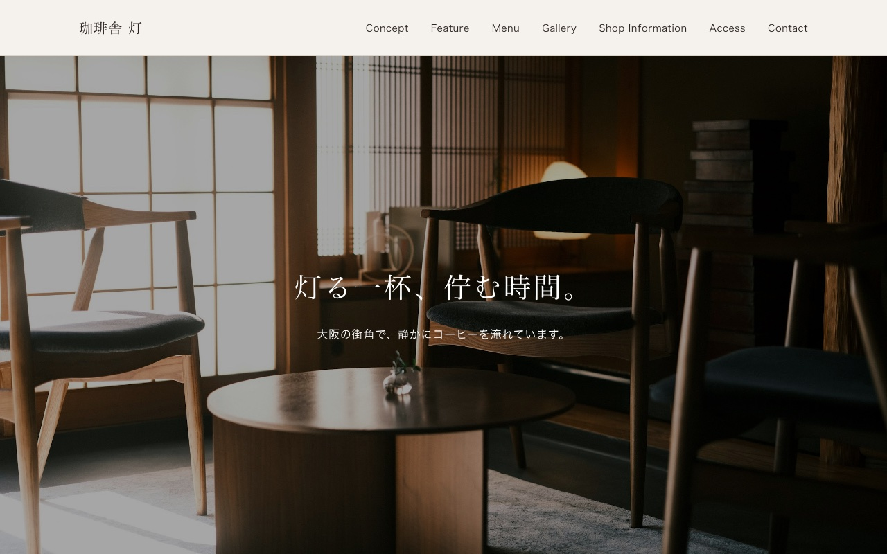
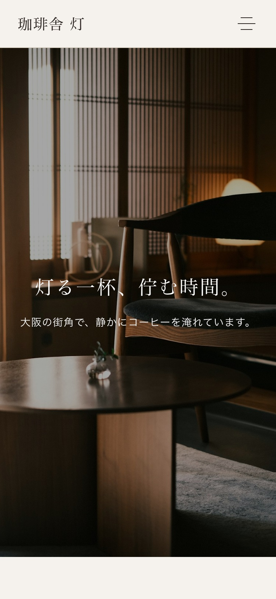

ここでご紹介する2つの作品は、実務案件ではなく、Web制作のスキルを示すために自主制作したサンプルサイトです。架空の店舗・企業を想定し、企画からワイヤーフレーム設計、実装、公開までを一人で行いました。
はじめまして。現在、Web制作を学びながら、実際に手を動かしてサイトを制作し、公開するところまでを一貫して行っています。
知識を蓄えるだけでなく、架空の店舗や企業を想定してサイトを企画し、情報設計・デザイン・コーディング・公開までの一連の流れを、自分の手で経験することを大切にしています。
制作の際は、見た目の良さだけでなく「誰に、何を伝えるためのサイトか」を最初に整理するようにしています。BtoC向けとBtoB向けでは伝え方もデザインの方向性も変わると考えており、目的に合わせて配色やレイアウトを作り分けることを意識しています。
Gitでの変更管理やGitHub Pagesでの公開にも対応しているため、制作から公開までを一人で完結させることができます。
今後は自主制作で培った経験を活かし、目的や課題に合わせたWeb制作に取り組んでいきたいと考えています。
見た目のデザインだけでなく、「何をどの順番で伝えるか」から考えて構成しています。
BtoC・BtoBなど、想定する相手や目的によってデザインのトーンを変えています。
Git / GitHubを使い、制作から公開までを自分の手で最後まで行っています。
BtoC・BtoBなど、サイトの目的や伝えたい相手に合わせてデザインの方向性を考えます。
どのデバイスで見ても崩れないよう実装します。
変更管理をしながら制作を進め、公開まで対応します。
ご依頼いただいた場合の想定フローです。
サイトの目的や伝えたいこと、イメージをお伺いします。
お伺いした内容をもとに、情報設計とデザインの方向性を整理します。
デザインからコーディングまで実装します。
内容をご確認いただきながら、必要に応じて調整します。
Gitを使って公開まで対応します。
Webサイトの制作に関するご相談やご質問など、お気軽にご連絡ください。
※このフォームはポートフォリオ用の送信デモです。入力内容は実際には送信されません。